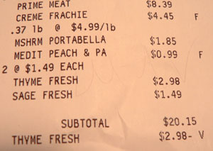

Garden of Cheatin'
I’ve written before about grocery stores ripping customers off in the checkout line. The last time, I focused on d’Agostino and Gristedes, but the worst culprit, I have determined after being overcharged four times in a row, is Garden of Eden.
On one occasion, I was charged $4 for a head of lettuce. On another, I was overcharged by twenty cents on beef stock (the cashier looked at the price, rang it up wrong, and continued ringing). Today it was fresh thyme, which was rung up twice, as you can see here:

The cashiers don’t have the code needed to fix a price, so they have to call a manager. When the manager arrived today to enter his code, I said, quite clearly, “I am overcharged for something every time I come here.” Ignored, I continued, “I have to be careful when I shop here, because this happens every time.” Ignored again, I collected my purchases and went home to take pictures of my receipt.
I shop at Garden of Eden because they have beautiful food, and because the store is always less crowded than Whole Foods. And I don’t think I can stop going there, because frankly I can’t live without it. All I can do is tell our readers to be careful when they buy groceries. Do your best to remember how much something costs, and complain if there is a nickel’s difference at the register.
Comments
Gulp. I confess I am far too lazy to ever look at my receipts when I’m leaving G of E. I will be doing so from now on though. Ugh.
Yes, please do. They are very sneaky in there, and not at all concerned with accuracy.
Add a comment